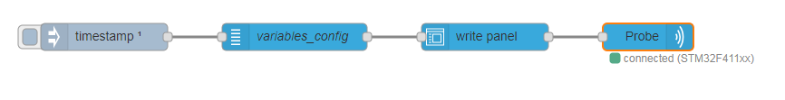
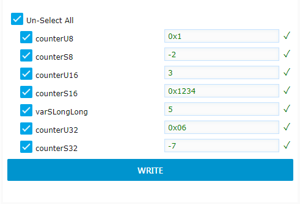

<!--
* module node-red-contrib-stm32cubemonitor
* Copyright(c) 2019 STMicroelectronics
-->
<script type="text/x-red" data-template-name="ui_write">
  <div class="form-row" id="template-row-group">
      <label for="node-input-group"><i class="fa fa-table"></i> Group</label>
      <input type="text" id="node-input-group">
  </div>
  
  <div class="form-row" id="template-row-size">
      <label><i class="fa fa-object-group"></i> Size</label>
      <input type="hidden" id="node-input-width">
      <input type="hidden" id="node-input-height">
      <button class="red-ui-button" id="node-input-size"></button>
  </div>

  <div class="form-row">
      <label for="node-input-name"><i class="fa fa-tag"></i> Name</label>
      <input type="text" id="node-input-name">
  </div>
</script>

<script type="text/x-red" data-help-name="ui_write">
    <p>Add a "write" widget to the dashboard</p>
    <h3>Properties</h3>
    <dl class="message-properties">
      <dt>Group<span class="property-type">Dashboard group</span></dt>
      <dd>Allows to define the dashboard group in which the Write widget will be rendered.</dd>
      <dt>Size<span class="property-type">(width x height) or auto</span></dt>
      <dd>Allows to specify the Write widget size in:
        <ul>
          <li><code>Fixed mode</code> In that case, you specify the width and height of the widget with fixed numbers of
            units (a unit is 48px wide by default with a 6px gap).</li>
          <li><code>Auto mode</code> In this case, the width will fill the width of the dashboard group.</li>
        </ul>
      </dd>
      <dt>Name<span class="property-type">string</span></dt>
      <dd>Name of the node in the flow.</dd>
    </dl><br>
    <h3>Input</h3>
    <p>The input msg represents a group of variables to be displayed in the Write widget. It has to be received only
      once when the flow is deployed.
      The payload can be set manually using an inject node or set with the "variables" node. If set manually, the
      <code>payload</code> property must be formatted in the following way to be processed</p>
    <dl class="message-properties">
      <dt>payload<span class="property-type">object</span></dt>
      <dd>The <code>payload</code> object holds several properties:
        <ul>
          <li><code>groupname</code> string</li>
          <li><code>variablelist</code> array of variables</li> each holding following properties:
          <ul>
            <li><code>name</code> variable name</li>
            <li><code>address</code> variable address</li>
            <li><code>type</code> number from 1 to 10 representing the variable type ( <code>1: Unsigned 8-bit</code>,
            <code>2: Signed 8-bit</code>, <code>3: Unsigned 16-bit</code>, <code>4: Signed 16-bit</code>, <code>5: Unsigned 32-bit</code>,
            <code>6: Signed 32-bit</code>, <code>9: Float</code>, <code>10: Double</code>).</li>
          </ul>
          <li><code>accesspoint</code> number (access port)</li> 
        </ul>
      </dd>
      <p>The following example shows an input msg <code>payload</code> for a write widget node :</p>
      <pre>
          {
            "groupname": "nv_group",
            "variablelist": [
              {
                "name": "counterU8",
                "address": "0x20000090",
                "type": 1
              },
              {
                "name": "counterS8",
                "address": "0x20000091",
                "type": 2
              },
              {
                "name": "counterU16",
                "address": "0x20000128",
                "type": 3
              },
              {
                "name": "counterS16",
                "address": "0x2000012a",
                "type": 4
              },
              {
                "name": "counterU32",
                "address": "0x20000178",
                "type": 5
              },
              {
                "name": "counterS32",
                "address": "0x2000017c",
                "type": 6
              }
            ],
            "accesspoint": 0
          }
      </pre>
    </dl><br>
    <h3>Output</h3>
    <p>The output <code>msg</code> object holds following properties:</p>
    <dl class="message-properties">
      <dt>topic<span class="property-type">string</span></dt>
      <dd>The <code>topic</code> is automatically set to "write" command. This "write" topic is processed by acqOut node to actually send the write command to the target.</dd>
      <dt>payload<span class="property-type">object</span></dt>
      <dd>The <code>payload</code> is an array representing the list of variables to display in the widget (in dashboard mode). Each variable holds several properties:
        <ul>
          <li><code>name</code> string representing the name of the variable</li>
          <li><code>address</code> string representing the start address of the variable</li>
          <li><code>type</code> number from 1 to 10 representing the variable type (one of <code>Unsigned 8-bit</code>,
            <code>Signed 8-bit</code>, <code>Unsigned 16-bit</code>, <code>Signed 16-bit</code>, <code>Unsigned 32-bit</code>,
            <code>Signed 32-bit</code>, <code>Float</code>, <code>Double</code>).</li>
          <li><code>value</code> string representing the value to write either in hexadecimal (starting by 0x or 0X) or in decimal</li>
        </ul>
      </dd>
    
    </dl>
    <p>The following example shows an output <code>msg</code> for a write widget node:</p>
    <pre>
        {
          "payload": [
            {
              "name": "counterU8",
              "address": "0x20000090",
              "type": 1,
              "value": "0x1"
            },
            {
              "name": "counterS8",
              "address": "0x20000091",
              "type": 2,
              "value": "-2"
            },
            {
              "name": "counterU16",
              "address": "0x20000128",
              "type": 3,
              "value": "3"
            },
            {
              "name": "counterS16",
              "address": "0x2000012a",
              "type": 4,
              "value": "0x1234"
            },
            {
              "name": "counterU32",
              "address": "0x20000178",
              "type": 5,
              "value": "0x06"
            },
            {
              "name": "counterS32",
              "address": "0x2000017c",
              "type": 6,
              "value": "-7"
            }
          ],
          "topic": "write",
        }
      </pre><br>
    <h3>Details</h3>
    <p>The write widget node is designed to be linked with a "variables" node on its "in" port, and with "acq out" node its "out" port</p>
    
    <p>Once deployed, a write widget is displayed in the dashboard presenting a list of variables (name, address, type) coming from the input msg.
      The end user can then fill some values for each variables and click on WRITE button to actually write the values in the memory target.</p>
    </script>

<script type="text/javascript">
  RED.nodes.registerType("ui_write", {
    category: "STMicroelectronics",
    color: '#3cb4e6',
    defaults: {
      group: { type: 'ui_group', required: true },
      name: { value: '' },
      order: { value: 0 },
      width: {
        value: 0,
        validate: function (v) {
          var valid = true
          var width = v || 0;
          var currentGroup = $('#node-input-group').val() || this.group;
          var groupNode = RED.nodes.node(currentGroup);
          valid = !groupNode || +width <= +groupNode.width;
          $("#node-input-size").toggleClass("input-error", !valid);
          return valid;
        }
      },
      height: { value: 0 },
    },
    inputs: 1,
    outputs: 1,
    icon: "ui_form.png",
    align: 'left',
    paletteLabel: "write panel",
    label: function () { return this.name || "write panel"; },
    oneditprepare: function () {
      $("#node-input-size").elementSizer({
        width: "#node-input-width",
        height: "#node-input-height",
        group: "#node-input-group"
      });

    },
    oneditsave: function () {
    },
    oneditresize: function (size) {
    }
  });
</script>